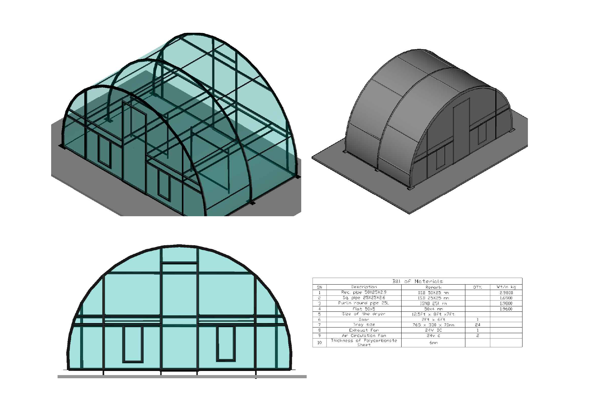
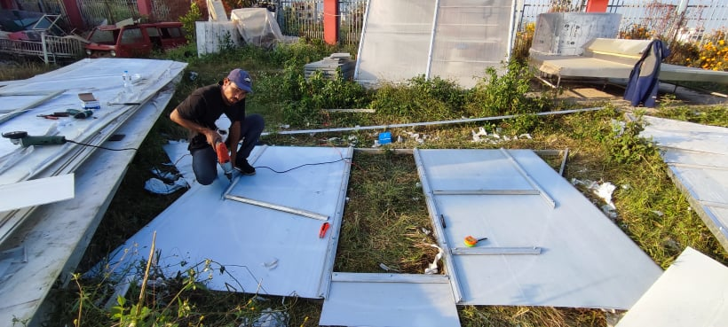
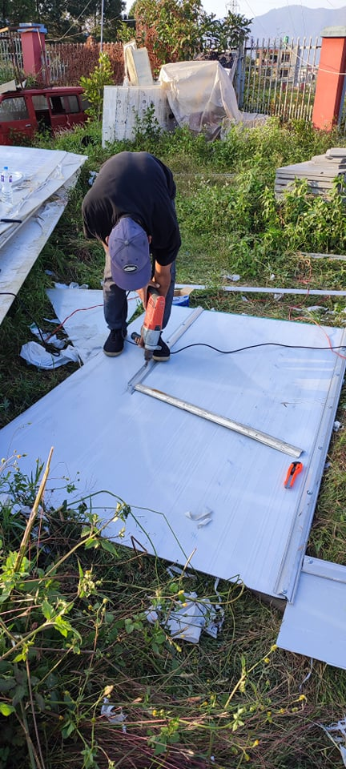
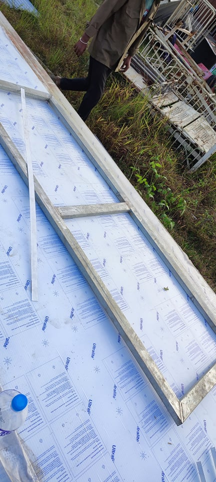
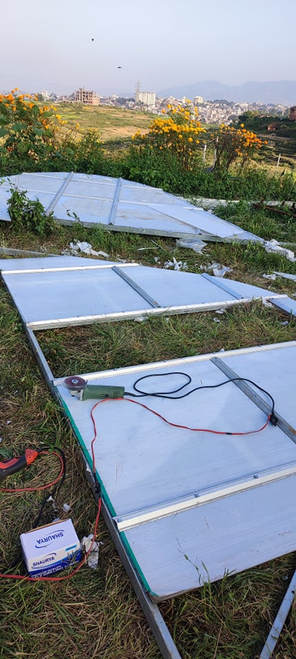
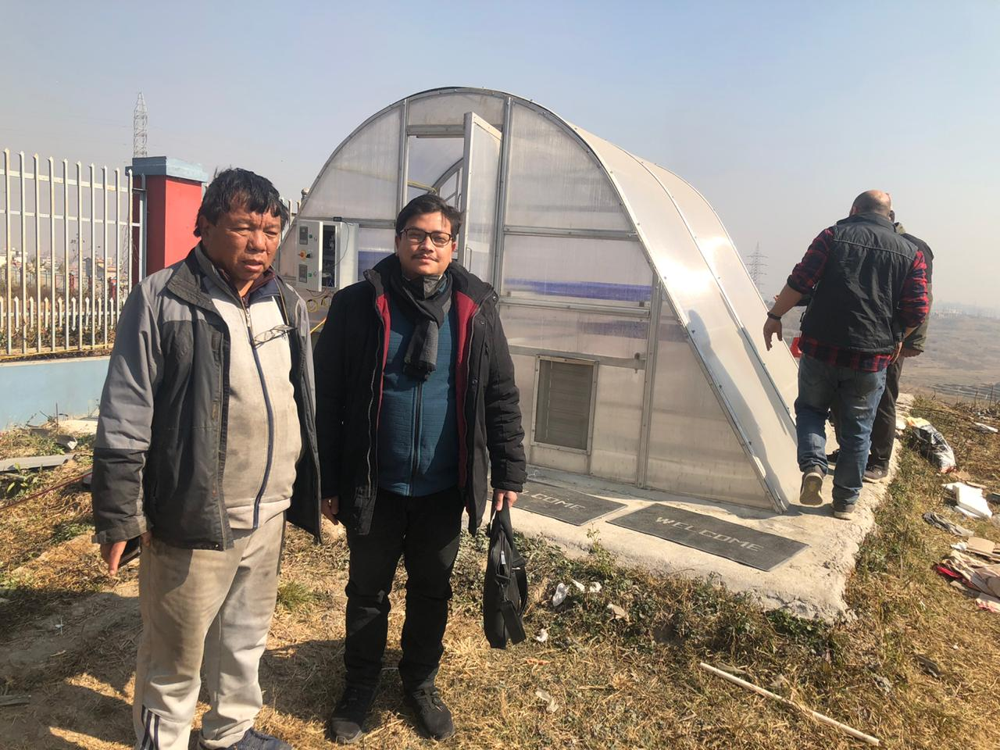
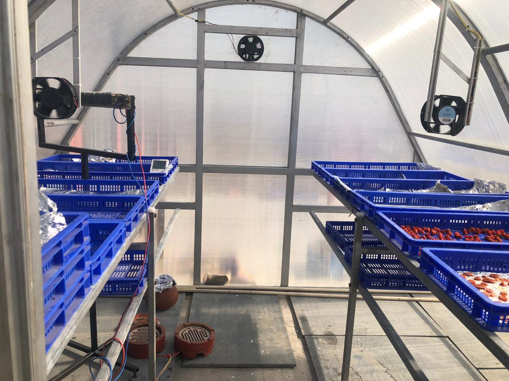
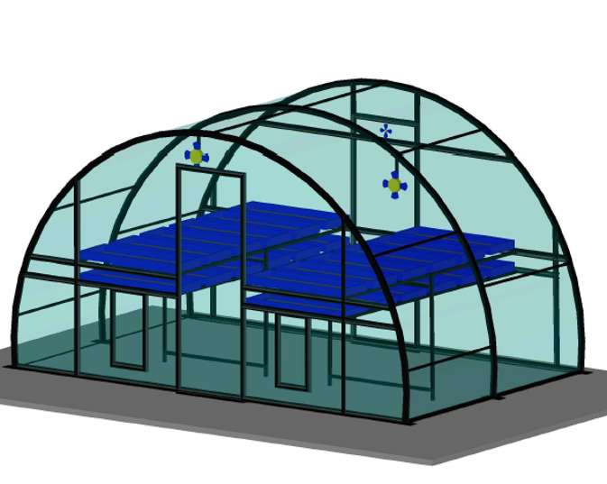

Walk-in hemi-cylindrical enclosure
- Approx. 12.5 × 8 × 7 ft
- Galvanized structural framing
- Transparent polycarbonate cladding
- Modular construction concept
ENGINEERING • GREENHOUSE DRYERS
This section follows my greenhouse-dryer work from reference study and AutoCAD design through material localization, prototype fabrication with the National Innovation Center, testing, scaling and later deployment.
FLAGSHIP CASE STUDY • PRODUCT DEVELOPMENT / SOLAR DRYING
Development of a Solar Greenhouse Dryer in Nepal
Aastha Engineering Solutions Pvt. Ltd. • 2020
WHY THIS PROJECT EXISTED
Greenhouse dryers of this type were being sourced from India, but the cost made them difficult to justify for many of the farmers they were intended to serve. I wanted to see whether the same basic idea could be translated into something that could be manufactured in Nepal.
The goal was not to create a cheaper structure by removing useful functions. It was to understand the product properly, redesign it around local fabrication, source as much as possible within Nepal, and reduce dependence on a complete imported system.
I was not trying to redesign solar drying.
I was trying to redesign how we obtained the dryer.01 • UNDERSTAND THE PRODUCT
I began by studying the existing Indian system as a technical reference. I broke it down into the parts that made it work: the curved enclosure, structural members, transparent cladding, tray arrangement, fastening system, circulation fans, exhaust, access points, controls, and supporting hardware.
From there, I used AutoCAD to develop the geometry and arrangement for a locally manufacturable version rather than treating the imported dryer as one indivisible product.

02 • LOCALIZATION
Once the design was defined, I prepared a material breakdown and searched different suppliers to understand what could realistically be sourced in Nepal. Procurement was not something that happened after engineering. Material availability became one of the design constraints.
In the first stage, both the specialized polycarbonate sheet and the food-grade HDPE trays had to be sourced from abroad. Later, we identified a suitable local source for the trays, reducing the imported portion of the system further. The specialized polycarbonate sheet remained the principal component that still needed external sourcing.
03 • FROM CAD TO FABRICATION
National Innovation CenterThe National Innovation Center strongly supported the idea of building useful technology in Nepal and making it more accessible to farmers. I communicated the concept and its purpose to Dr. Mahabir Pun. He understood the intent, and the Center supported fabrication of the first prototype.
I stayed physically involved during fabrication rather than handing over the drawings and waiting for the finished structure. The National Innovation Center team was a major part of translating the design into a real system.




DESIGN VALIDATION
One of the most useful validations of the AutoCAD work came during fabrication: the prototype largely followed the original drawings without requiring major redesign.
The first 100 sq ft prototype took roughly four days to manufacture. Being present through fabrication allowed me to see directly how dimensions, bends, joints, access, tray supports, cladding, and fan positions translated from a drawing into a physical product.
04 • HOW IT WORKS
05 • PROTOTYPE OUTCOME
We tested the completed dryer after fabrication rather than treating construction itself as the finish line. The system operated successfully and validated the basic structure, airflow, and drying concept.
The original prototype remains at the National Innovation Center and, to my knowledge, is still functioning there.
What mattered to me was not that greenhouse drying itself was new. We had taken a system that previously arrived as an imported product and proved that it could instead begin with a drawing, a material list, and local fabrication in Nepal.
05 • PROTOTYPE OUTCOME
We tested the completed dryer after fabrication rather than treating construction itself as the finish line. The system operated successfully and validated the basic structure, airflow, and drying concept.
The original prototype remains at the National Innovation Center and, to my knowledge, is still functioning there.
What mattered to me was not that greenhouse drying itself was new. We had taken a system that previously arrived as an imported product and proved that it could instead begin with a drawing, a material list, and local fabrication in Nepal.
COMPLETED WORKING PROTOTYPE
The first locally fabricated prototype moved from AutoCAD drawings and material selection into a complete working drying system at the National Innovation Center.


06 • DESIGNING FOR SCALE
The 100 sq ft system was designed around a repeatable tunnel geometry. Increasing capacity did not require beginning again from zero. By extending the structural length, tray arrangement, airflow system, and corresponding material quantities, the same basic design language could support larger dryers.
A 250 sq ft configuration was subsequently developed as a larger design variant while retaining the same core greenhouse-drying concept.

WHAT THIS PROJECT REQUIRED
We were not trying to reinvent solar drying.
We were trying to change where the dryer had to come from.